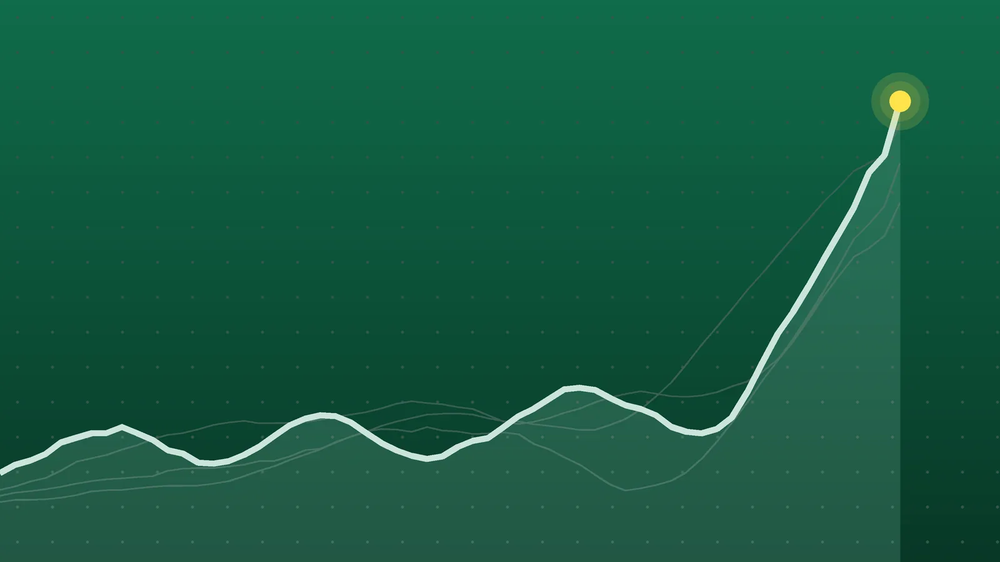

SportsExplainer
Bundesliga Scores, Oct. 24: Late Beier Goal Puts Dortmund on Top
Six Saturday games produced 13 goals, two red cards in Augsburg and a three-point Dortmund lead that Bayern can erase on Sunday.

Quick take
- Substitute Maximilian Beier scored in the 80th minute as Dortmund beat Eintracht Frankfurt 1-0 and moved three points clear at the top.
- Niclas Füllkrug converted two penalties in Werder Bremen’s 3-2 win at Mainz, giving him eight league goals this season.
- RB Leipzig scored all four goals after halftime in a 4-0 win over promoted SV Elversberg.
- Augsburg and Union Berlin drew 1-1 after both teams had a player sent off.
Why it's trending Matchday 7 of the Bundesliga on Saturday, Oct. 24, ended with Borussia Dortmund alone in first place.
Bundesliga scores for Oct. 24
Borussia Dortmund closed Saturday’s Bundesliga program in first place. Maximilian Beier came off the bench and scored in the 80th minute for a 1-0 home win over Eintracht Frankfurt, AFP reported. Dortmund now lead Bayern Munich by three points, although Bayern still have a game to play this weekend.
Earlier in the day, Werder Bremen won 3-2 at Mainz behind two Niclas Füllkrug penalties, and RB Leipzig beat promoted SV Elversberg 4-0. Paderborn edged Hamburger SV 1-0 with a late goal, while Augsburg vs. Union Berlin and Cologne vs. Schalke both finished level. The six matches produced 13 goals in total.
All final scores
| Winner | Score | Loser | Note |
|---|---|---|---|
| Borussia Dortmund | 1-0 | Eintracht Frankfurt | Home win; Maximilian Beier 80th minute, set up by Jobe Bellingham |
| Werder Bremen | 3-2 | at Mainz 05 | Niclas Füllkrug two penalties; Ludovit Reis also scored |
| RB Leipzig | 4-0 | SV Elversberg | Home win; Rômulo two goals, all four after halftime |
| SC Paderborn | 1-0 | Hamburger SV | Home win; Rayan Philippe 88th minute |
| FC Augsburg, Union Berlin | 1-1 | Draw | Played in Augsburg; one red card for each team |
| 1. FC Köln, Schalke 04 | 0-0 | Draw | Played in Cologne; Loris Karius kept Schalke level |
Friday’s opener of Matchday 7 was Borussia Mönchengladbach’s 3-2 win at VfB Stuttgart, according to hessenschau.de.
Dortmund wait for the bench to deliver
For most of the evening at Signal Iduna Park, Dortmund pressed without a breakthrough. Serhou Guirassy had an early chip saved by Frankfurt goalkeeper Noah Atubolu and headed a corner off the crossbar soon after the restart, AFP said. Beier, on for Fabio Silva with 22 minutes left, curled in the winner from just inside the area after a pass from Bellingham, who had also come on as a substitute.
Dortmund outshot Frankfurt 18 to 8 and won 13 corners to Frankfurt’s one, according to the t-online match ticker, which listed the crowd at 81,365. Coach Niko Kovač credited his substitutes afterward. “We’ve got a great team,” he said, per AFP. Dortmund remain unbeaten at five wins and two draws, and their last six league goals have all come in the 70th minute or later, Bundesliga.com noted.
Füllkrug’s penalties carry Bremen
Bremen led 2-0 inside 25 minutes. Füllkrug scored from the spot in the seventh and 25th minutes, according to the ZDFheute ticker. Anthony Caci headed one back for Mainz in the 33rd minute. Reis restored the two-goal cushion in the 61st minute with a deflected shot, and Lee Jae-sung answered with a header two minutes later. Bremen held on from there.
Füllkrug has now scored in six straight league games. His eight goals after seven rounds match Rudi Völler’s total at the same point of the 1985-86 season, Bundesliga.com reported. Bremen have 12 points, their best start since 2018-19.
Leipzig wake up after the break
Leipzig and Elversberg were scoreless at halftime. Tidiam Gomis opened the scoring in the 48th minute, and Rômulo added the second in the 66th, both from Antonio Nusa passes, per the t-online ticker. Christoph Baumgartner, back from a long injury layoff, scored in the 84th minute, and Rômulo finished his first Bundesliga brace in stoppage time. Leipzig have won their four home league games this season by a combined 18-0, AFP said, but have yet to earn a point on the road.
What it means
The table after Saturday, from fussballnationalmannschaft.net, with goal difference:
| Pos. | Team | Played | Points | Goal difference |
|---|---|---|---|---|
| 1 | Borussia Dortmund | 7 | 17 | +8 |
| 2 | Bayern Munich | 6 | 14 | +17 |
| 3 | SC Freiburg | 6 | 13 | +9 |
| 4 | Bayer Leverkusen | 6 | 13 | +7 |
| 5 | RB Leipzig | 7 | 12 | +9 |
| 6 | Werder Bremen | 7 | 12 | +1 |
Dortmund’s three-point lead is real but fragile. Bayern have a game in hand at Freiburg on Sunday. A Bayern win would tie them with Dortmund on 17 points, and Bayern’s goal difference is nine better, so they would go back to first. A draw would leave Bayern two points behind. If Freiburg win, they reach 16 points, one behind Dortmund. Leverkusen can also climb to 16 with a win at Hoffenheim.
Bremen and Leipzig are level on 12, but Leipzig rank higher on goal difference, +9 to +1.
Further down, both teams finished with 10 men in Augsburg. Union’s Felix Uduokhai was sent off in the 19th minute and Augsburg’s Juma Bah in the 63rd, according to ZDFheute. Han-Noah Massengo’s 71st-minute header put Augsburg ahead, but Janik Haberer equalized three minutes later. Augsburg took 27 shots to Union’s four and still could not win.
Paderborn’s win was only their second of the season. Philippe, who is on loan from Hamburg, beat his parent club with a left-footed shot from about 20 meters, ZDFheute reported. The result ended Hamburg’s three-game league winning streak and left Paderborn a point behind them. In Cologne, Schalke’s Karius made several saves to secure a 0-0 draw, Bundesliga.com’s report said. Schalke have scored only four goals this season, the fewest in the league.
Home teams won three of Saturday’s six games, the visitors won one, and two ended in draws.
What’s next
Matchday 7 finishes on Sunday, Oct. 25. Germany sets its clocks back an hour that morning, so Germany is five hours ahead of the U.S. East Coast instead of the usual six. All times ET:
- TSG Hoffenheim vs. Bayer Leverkusen, 10:30 a.m.
- SC Freiburg vs. Bayern Munich, 12:30 p.m.
The Freiburg-Bayern result decides who leads the Bundesliga going into the next matchday.
Sources
- t-online Dortmund – Frankfurt | Bundesliga heute | Live-TickerOct. 24, 2026
- AFP via Arab News Beier late show sends Dortmund top of BundesligaOct. 24, 2026
- fussballnationalmannschaft.net Bundesliga Ergebnisse heute: BVB übernimmt die Spitze, alle Spiele vom 7. Spieltag + TabelleOct. 24, 2026
- Bundesliga.com Fülle wie Völler und Leipzigs Lauf: Die Zahlen des 7. SpieltagsOct. 24, 2026
- ZDFheute Bundesliga im Liveticker: 1. FSV Mainz 05 gegen Werder BremenOct. 24, 2026
- t-online Leipzig – Elversberg | Bundesliga heute | Live-TickerOct. 24, 2026
- ZDFheute Bundesliga im Liveticker: FC Augsburg gegen 1. FC Union BerlinOct. 24, 2026
- ZDFheute Bundesliga im Liveticker: SC Paderborn 07 gegen Hamburger SVOct. 24, 2026
- Bundesliga.com Köln und Schalke trennen sich torlosOct. 24, 2026
- hessenschau.de Fußball Bundesliga 2026/2027Oct. 24, 2026